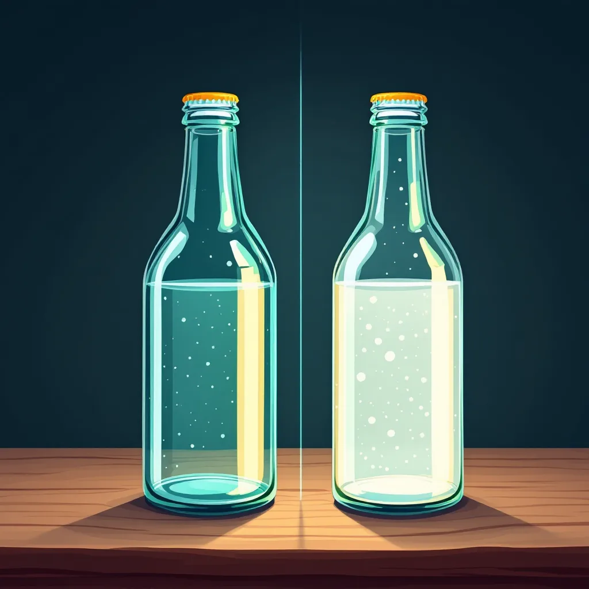
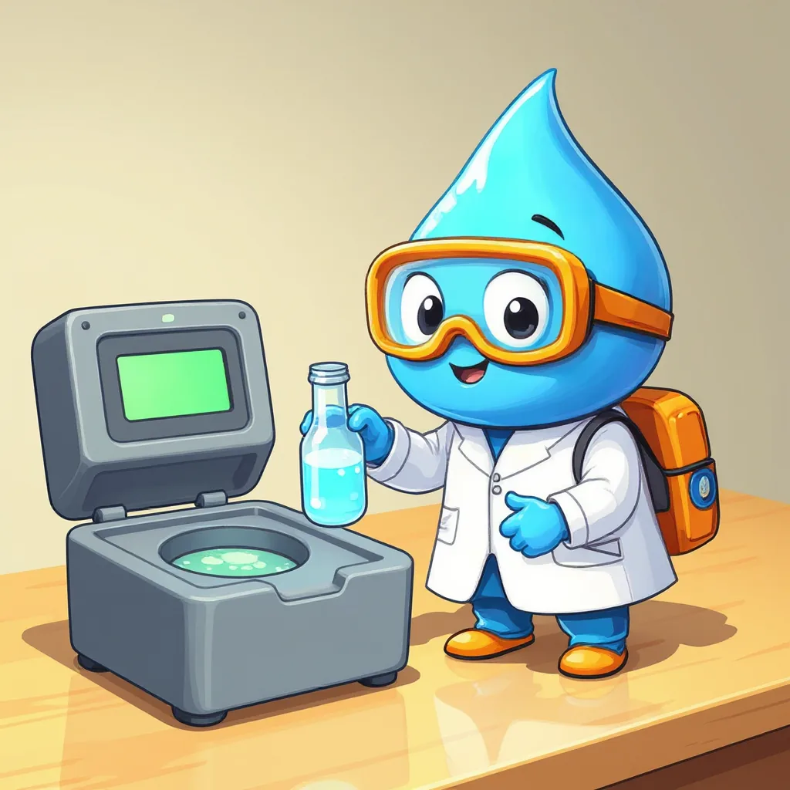

¿Qué es la turbiedad?
Para empezar, la turbiedad indica qué tan difícil es ver a través del agua. Esto ocurre porque el agua lleva partículas muy pequeñas suspendidas, como barro, arcilla o microbios, que desvían la luz. Por ejemplo, sucede lo mismo con los faros de un carro en una noche con neblina: las gotitas de la niebla dispersan la luz y el camino se ve borroso. Así, a más partículas, mayor turbiedad.
El turbidímetro

Por eso, la turbiedad se mide con un turbidímetro, un aparato que ilumina la muestra y detecta cuánta luz sale desviada hacia un lado por las partículas. Su resultado se expresa en unidades nefelométricas de turbiedad, o NTU. Además, antes de medir, el equipo se ajusta con agua sin partículas, que marca 0 NTU, y con líquidos de turbiedad conocida, preparados con una sustancia llamada formazina.
Medir paso a paso

- EncenderEsperar de 5 a 10 minutos a que el equipo se estabilice.
- CalibrarCon agua de 0 NTU y con estándares de formazina.
- PrepararAgitar la muestra suavemente, sin hacer burbujas.
- MedirLlenar la cubeta, limpiarla por fuera y leer el valor en NTU.
De hecho, las burbujas también desvían la luz, así que el aparato las contaría como si fueran partículas. Por eso, si se forman, se deja reposar la muestra unos minutos antes de medir.
Además, una huella o una gota en el vidrio desvía la luz igual que una partícula. Así, una cubeta sucia o rayada daría una turbiedad más alta que la real.
En ese caso, se diluye: por ejemplo, 10 mL de muestra con 90 mL de agua sin partículas. Luego, el resultado se multiplica por 10; así, una lectura de 25 NTU equivale a 250 NTU reales.
Laboratorio virtual: el turbidímetro
Sigue los pasos con el botón azul.
Calculadora de dilución
Mini-reto
Todas las respuestas se encuentran en esta página.
Dos muestras marcan 3 NTU y 40 NTU. ¿Cuál es más turbia?
Una muestra diluida 1:10 marca 12 NTU. ¿Cuál es su turbiedad real?
En el laboratorio virtual, M1 marcó 3,8 NTU. Si el máximo es 2 NTU, ¿cumple?